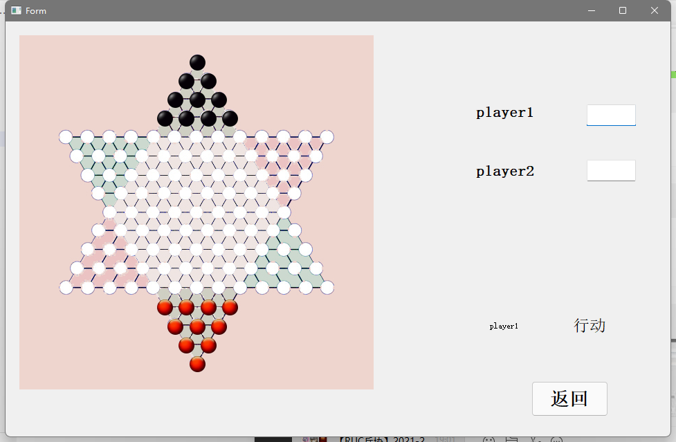
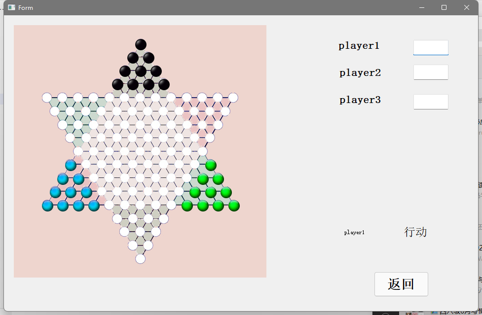
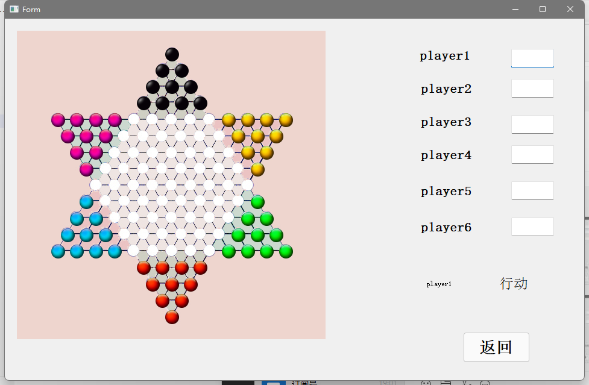
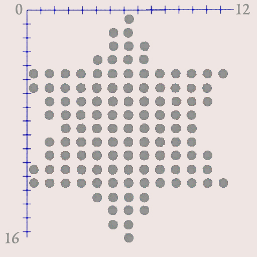
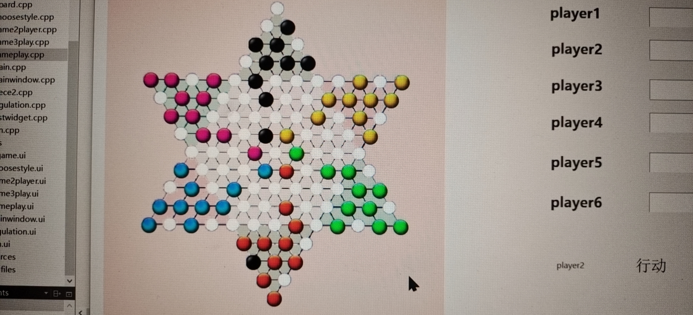

Task1¶
1.功能分析¶
1.1 Chinese Checkers游戏基本功能¶
· 自由实现进入游戏、退出游戏 · 可以自由选择2,3,6人模式，多玩家轮流操作实现本机对局 · 美观、友好的图形界面 · AI、托管（暂未实现） · 联网功能（暂未实现） · 终局判断（暂未实现） · 未实现每步限时、超时判负的功能
1.2 Chinese Checkers游戏玩法¶
十子跳棋的棋盘，玩家的10枚棋子初始位置为所分配的角上的外四行
·2人对局，初始将棋子放在相对的角上 
·3人对局，将棋子互相间隔一个角摆放以平均分布 
·6人对局，每个玩家各占一角 
1.3 Chinese Checkers游戏规则¶
- 平移：可以将棋子移向其周围相邻的 6个位置中的一个。平移不得连续进行。
- 跳跃：己方棋子 A 和任一枚棋子 B 相邻（B 不限属于哪一方），且以 B 为中心 A 的对称点上没有其他棋子，则可以将 A 移动到这一对称点上。并且可以实现连续跳跃。
- 不允许轮空。
- .终局，判断胜负（暂未实现）。
2.游戏流程设计¶
2.1 整体思路¶
首先创建一个主窗口，用于玩家选择游戏模式（即是2人、3人还是6人）；接下来依次创建棋子类、棋盘类；最后进行游戏规则的制定与实现。
2.2 主窗口（MainWindow）¶
该类中主要包含多个按钮信号，以及多个函数用于点击某个按钮进行目的窗口的展示。
2.3 棋子类（piece2）¶
该类中包含每个棋子当前位置、是否被选中、属于哪方的信息，以及多个函数用于获取棋子位置、改变棋子的位置等功能。
2.4 棋盘类（board）¶
创建info结构体，用于存储棋盘每个位置的横纵坐标、是否被占用，并设置Piece2类指针来获取棋子相关信息。 对棋盘进行初始化，然后生成有效棋盘（即每个点有对应的坐标。）
2.5 游戏规则的制定与实现（gameplay)¶
设置QRectF容器，创建可点击区域，设置Piece2棋子，存储所有棋子，设置int型容器，用于遍历棋子可以走到的位置。
void gameplay::mousePressEvent()
创建鼠标点击事件，点击棋子，进行移动，若被点击棋子能够移到合法位置，便进行移动，移动结束后改变棋盘信息，交换控制权，六方轮流移动。
void gameplay::produceRectF()
创建棋盘可点击区域链表，即将棋盘的槽设立为鼠标可点击区域。
void gameplay::producePiece6Player()
生成玩家方的棋子，即将每个棋子按钮设置特定图片，棋子可视化。（我能偷偷夸一句，我们的棋子很漂亮嘛~）
void gameplay::setPiece0()把棋子按钮设置在棋盘的相对位置上，同时完成对棋盘相应位置数据的初始化。
void gameplay::processClick0(int m,int n)处理鼠标点击事件，即每次点击棋子的颜色变淡，可视化处理。
void gameplay::changeInfo(int x1,int y1,int x2,int y2)每次棋子为之发声改变时，将棋盘的信息进行改变。
bool gameplay::isLegalMove(int x1,int y1,int x2,int y2)用来判断棋子的移动是否合法。如果合法则进行移动。
void gameplay::isLegalJump(int m1,int n1,int m2,int n2)用来判断连跳是否合法，通过递归回溯实现。
3.实现细节¶
3.1 设置棋子位置、棋盘可点击区域¶
建立直角坐标系，通过Photoshop计算棋盘图片槽之间相隔距离，将每个坐标对应到棋盘图片槽的指定位置。
而棋子的坐标，为了实现对齐，将棋子的奇数行左移。 
3.2 游戏过程¶
3.2.1.总体思路
运用条件语句、调用相关函数判断移动是否合法，isLegal容器将合法的、可以移动的移动后的坐标压栈。
3.2.2.连跳
采用递归的策略，首先对棋子A的六个方向进行搜索，判断是否存在棋子B，若有棋子B占用位置，则继续对棋子B的六个方向进行搜索，判断是否存在位置无棋子，若存在则进行递归，直至不在存在能连跳的位置结束递归。
4. 出现的问题¶
4.1 空指针：¶
以下问题：程序进入多人游戏时无窗口出现直接报错为“crash”
4.1.1. 在遍历容器为每一个棋子设置槽函数时注意每方棋子在vector中和begin与end的位置关系
for(vector<Piece2*>::iterator iter = this->vectorPieces.begin();iter !=this->vectorPieces.end()-50;iter++)
//iterator 行为类似于指针，用于遍历整个容器
{
//Piece2* ptr = *iter;
connect(*iter,SIGNAL(pieceInfo(int,int)),this,SLOT(processClick0(int,int)));
//connet(指向棋子的指针，棋子里证明被点到的函数，本类：gameplay,gameplay里的处理点击的函数)
//begin是vector的开始，有60个棋子
}
4.1.2. 在生成棋盘时数学关系出错，导致在后面程序的运行中出现错误的对应关系，从而出现未被正确赋值的指针
if(i<4 ){
if(i%2){
if(count<i+1){
this->chessBoard[i][6-(i+1)/2+count].x=column1[6-(i+1)/2+count];
count++;
}
}
else{
if(count<i+1){
this->chessBoard[i][(12-i)/2+count].x=column0[(12-i)/2+count];
count++;
}
}
}
4.2 数学关系逻辑问题：¶
4.2.1. 问题：棋盘上棋子不在正确位置
解决：更改设置棋子的时候数学关系
void gameplay::setPiece0()
{
Piece2* ptr;
vector<Piece2*>::iterator iter = this->vectorPieces.begin();
int begin=6;//小三角形中轴线
for(int i=0;i<4;i++)
{
if(i%2)
begin--;
for(int count=0;count<=i;count++)
{
ptr=*iter;
ptr->setGeometry(this->cb->chessBoard[i][begin+count].x,this->cb->chessBoard[i][begin+count].y,23,23);
ptr->setPlace(i,begin+count);
this->cb->chessBoard[i][begin+count].flag=1;
this->cb->chessBoard[i][begin+count].piecePlace=ptr;
iter++;
}
}
for(vector<Piece2*>::iterator iter = this->vectorPieces.begin();iter !=this->vectorPieces.end()-50;iter++)
{
ptr=*iter;
ptr->setParent(this);
}
}
4.2.2. 问题：连跳不能正常进行
解决：递归前记得初始化
for(int i=0;i<17;i++)
for(int j=0;j<13;j++)
cb->chessBoard[i][j].jumpFlag=0;
isLegalJump(m1,n1,m2,n2);
4.2.3. 问题：一部分关系稍复杂的连跳不能正常进行
解决：更正连跳中数学关系的错误
if(m1<16&&cb->chessBoard[m1+1][n1].x!=0&&cb->chessBoard[m1+1][n1].flag==1)//左下方
{
if(n1>0&&m1<15&&cb->chessBoard[m1+2][n1-1].x!=0&&cb->chessBoard[m1+2][n1-1].flag==0&&cb->chessBoard[m1+2][n1-1].jumpFlag!=1)//如果左面隔一个的位置是空的，那就是一次合法的跳跃
{if(m1+2==m2&&n1-1==n2)
{
isLegal.push_back(m1+2);
isLegal.push_back(n1-1);
cb->chessBoard[m1+2][n1-1].jumpFlag=1;
}
else{
cb->chessBoard[m1+2][n1-1].jumpFlag=1;
isLegalJump(m1+2,n1-1,m2,n2);
}
}
}
4.3 棋子移动时未考虑棋子逻辑坐标与Qt的图形界面的交互¶
4.3.1. 问题：移动棋子，有正确的玩家控制权轮换，对棋子移动的合法性判断也体现棋子已经完成移动，但是不显示棋子移动且被移动棋子原位置仍可点击（并且在点击后crash） 解决方法：在走棋时更改棋子作为一个按钮在界面上的位置信息（棋子继承QPushButton类）
this->select->move(cb->chessBoard[m2][n2].x,cb->chessBoard[m2][n2].y);
5. 知识点：¶
5.1. vector容器类似于数组，iterator行为类似于指针，用于遍历整个容器¶
eg：
for(vector<Piece2*>::iterator iter = this->vectorPieces.begin();iter !=this->vectorPieces.end()-50;iter++)
//iterator 行为类似于指针，用于遍历整个容器
{
//Piece2* ptr = *iter;
connect(*iter,SIGNAL(pieceInfo(int,int)),this,SLOT(processClick0(int,int)));
//connet(指向棋子的指针，棋子里证明被点到的函数，本类：gameplay,gameplay里的处理点击的函数)
//begin是vector的开始，有60个棋子
}
5.2. QMouseEvent传入用于描述鼠标事件的参数¶
eg：
void gameplay::mousePressEvent(QMouseEvent* event)//QMouseEvent传入用于描述鼠标事件的参数
{
if(event->button()==Qt::LeftButton)
5.3. 判断鼠标是否在pushButton上,从而保证可以在正确的时机进入mousePressEvent()¶
if(ptr->contains( mapFromGlobal(QCursor::pos()))==true)
6.查找及参考的资料¶
6.1通过查资料学习的语法与数据结构：¶
6.1.1.发现数组在插入，加上和删除元素时不变，自主参考资料学习了vector容器，搜索资料如下：
http://c.biancheng.net/view/6749.html https://baike.baidu.com/item/push_back/7371301?fr=aladdin https://zhidao.baidu.com/question/362446939224399732.html学习vector中at函数 https://www.runoob.com/cplusplus/cpp-stl-tutorial.html https://baike.baidu.com/item/%E8%BF%AD%E4%BB%A3%E5%99%A8/3803342?fromtitle=iterator&fromid=226189&fr=aladdin
学习代码如下：
//初始化一个空vector容量
vector<char>value;
//向value容器中的尾部依次添加 S、T、L 字符
value.push_back('S');
value.push_back('T');
value.push_back('L');
//调用 size() 成员函数容器中的元素个数
printf("元素个数为：%d\n", value.size());
//使用迭代器遍历容器
for (auto i = value.begin(); i < value.end(); i++) {
cout << *i << " ";
}
cout << endl;
//向容器开头插入字符
value.insert(value.begin(), 'C');
cout << "首个元素为：" << value.at(0) << endl;
6.1.2.在撰写游戏规则时，希望找到表现鼠标点击的函数，搜索资料如下：
https://www.cnblogs.com/aiguona/p/9999507.html
学习代码如下：
void Widget::mouseMoveEvent(QMouseEvent *event)
{
// 这里必须使用buttons()
if(event->buttons() & Qt::LeftButton) //进行的按位与
{
···
}
}
6.2通过查资料学习的Qt控件：¶
6.2.1.在鼠标点击时加判断条件，看其是否点在了控件上,从而保证可以在正确的时机进入mousePressEvent()，搜索资料如下：
https://blog.sdn.net/hwx802746/article/details/109244354 https://blog.csdn.net/qq21497936/article/details/117070346 学习代码如下：
// 判断鼠标是否在pushButton上
if (ui->pushButton->geometry().contains(this->mapFromGlobal(QCursor::pos())))
{
// do something...
}
6.2.2.希望移动棋子的逻辑坐标以后与Qt进行交互，可以实现整个棋子按钮（包括指针、图片）的移动，搜索资料如下：
https://blog.csdn.net/qq_15094525/article/details/100094935 https://blog.csdn.net/weixin_30305735/article/details/98425540 https://blog.csdn.net/a8039974/article/details/90728536
学习代码如下：
void MoveButton::keyPressEvent(QKeyEvent *event)
{
if(event->key() == Qt::Key_Left)
{
if(this->x()-4>=0)
{
this->move(this->x()-4,this->y());
}
}
6.2.3.学习插入按钮，资料如下：
https://blog.csdn.net/qq_42564908/article/details/106338164 学习代码如下：
所以用法是:
1、在UI文件里加入按钮，objectName 设置为pushButtonA
2、在引用的头文件（比如MainWindow.h）里加入按钮曹的声明：
public slots:
void on_pushButtonConnect_clicked();
1
2
3、在调用处使用，（比如MainWindow.cpp）。
void MainWindow::on_pushButtonConnect_clicked()
{
qDebug("pushButtonConnect");
}
6.2.4.设置可点击矩形区域，用于铺满棋盘，资料如下：
https://baike.baidu.com/item/SetRect/680218?fr=aladdin 学习代码如下：
函数原型编辑
BOOL SetRect(LPRECT lprc, int xLeft, int yTop, int xRight, int yBottom);
参数
lprc:[out] 指向RECT 结构的指针，该指针包含了所要设置的矩形。
xLeft:[in] 指定矩形左上角的X坐标。
yTop:[in] 指定矩形左上角的Y坐标。
xRight:[in] 指定矩形右下角的X坐标。
yBottom:[in] 指定矩形右下角的Y坐标。
6.3通过查资料纠正的代码错误：¶
6.3.1.程序crashed,经过请教师兄，进行调试（不会调试，进行资料搜索）：
https://blog.csdn.net/breakwind_/article/details/95060548 https://blog.csdn.net/qq_33266987/article/details/53285693
6.3.2.发现crashed的位置后确定为空指针导致程序崩溃，搜索资料如下：
https://blog.csdn.net/qq_43660925/article/details/122431484
6.3.3.按钮突然没作用，搜索资料如下：
https://blog.csdn.net/weixin_43577616/article/details/120706263
7.效果show time¶
